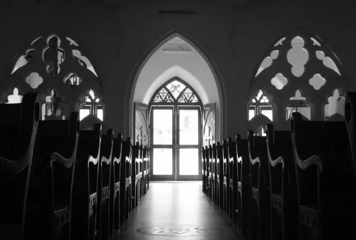

Some people confuse Church Noise to people crying out of sorrows, fear. Although it is true that some people are crying outloud due to the mentioned reasons, Some are just crying out their thanks and worshiping out of Love and research has found that these people do feel happy, contented and they find joy and pleasure in crying out to God. Some do even say there is joy and pleasure in crying outloud their problems to God because they feel and believe that they will get answers to their prayers.
Church
Noise
Happiness